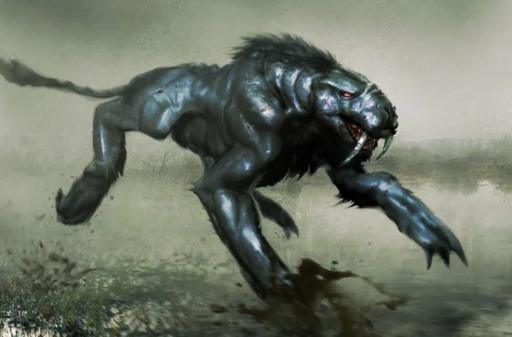

El Bunyip es una criatura legendaria perteneciente a las tradiciones
orales de los pueblos aborígenes.
Se dice que habita en pantanos, lagos, ríos y zonas húmedas alejadas
de la civilización. Aunque no existe una única descripción, muchas
historias lo presentan como una criatura grande, oscura y aterradora.
Algunas leyendas le atribuyen colmillos afilados, ojos brillantes,
garras poderosas y un rugido espeluznante que puede escucharse a gran
distancia. Otras versiones lo describen como una mezcla entre varios
animales.
El Bunyip suele aparecer en relatos utilizados para advertir a los niños
sobre los peligros de acercarse a aguas profundas o zonas pantanosas.
Más allá de su aspecto terrorífico, el Bunyip también refleja la conexión
entre la mitología aborigen y la naturaleza. Muchas historias transmiten
respeto por el entorno natural y por los peligros que este puede ocultar.
A día de hoy sigue siendo una de las criaturas más misteriosas del
folclore australiano.